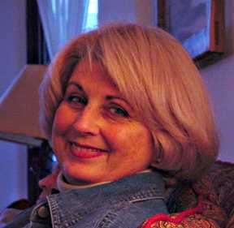
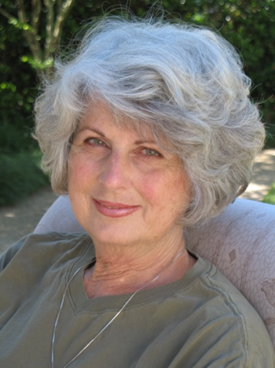

Jane Pickett's StoryIn 1974, at age 34, I was diagnosed with Squamous Cell Carcinoma of the Esophagus.

Jane in 2002 In 1974, at age 34, I was diagnosed with Squamous Cell Carcinoma of the Esophagus. I had felt as if there was a problem for two years prior to diagnosis. I first went to an Ear Nose and Throat doctor in Raleigh, NC, pointedly asked him if I had cancer and his response was "No Honey it's just your nerves." We moved to Lake Worth, Florida and about a year later I went to see another Ear Nose and Throat doctor who prescribed tranqualizers for my "Nerves" and sent me home. I continued to suffer with terrible indigestion and finally got to the point where I couldn't even swallow liquids and lost a great deal of weight in a short period of time. I consulted an Internist, he hospitalized me and a large mass was found in my esophagus. We then went to Miami for a biopsy which first came back negative but the surgeon, Dr. Lombardi wasn't convinced that the results were correct and felt we should do another biopsy which came back positive for squamous cell carcinoma of the esophagus. At the time, he told us it was a very fast growing, aggressive type of cancer and described the surgery done for this type as very radical, it was disfiguring, losing the larynx and lymp nodes in the neck. He said we had to go to a larger hospital to have this surgery considered, such as Slone Kettering or Washington University, that he did not perform such a surgery. We were told to get our affairs in order, that I had only a few weeks to six months to live. After conferring with our cousin Dr. Crowder who was at Oschners in New Orleans, we decided to go to a Dr. Joseph Ogura, a specialist in St. Louis, at Barnes Medical Center, Washington University. He and a Dr. Roper performed another biopsy. The tumor was located at the very top of the esophagus and was much larger than they expected, the tumor extended to the level of criccopharyngeous muscle and extended from the cricopharyngeous through T-2. it had broken thru the wall of the esophagus. He told us that there was nothing that could be done for me, that it was inoperable. We had good friends at the University of Florida, who happened to be head of the Physicians Assistant program there, and had made a few contacts at the hospital. I mentioned one of the doctors names and Dr. Ogura had trained this doctor. He made a call for us and we arranged to see a Dr. Rodney Million, radiation oncologist at the University Hospital, Shands in Gainesville, Florida. It was not certain that any hospital would agree to treat me, but Dr. Million agreed to do so. It was at the time a rather experimental procedure as I was told later by one of the doctors. They built little sandbags to help protect my spine from the radiation, there was a very high percentage that if I survived the cancer, I could be paralyzed from the neck down due to radiation damage to the spine. This risk was explained to me many times, but we had no choice, radiation was my only option. My primary radiation oncologist was Dr. Steven Terry Kraus. Dr. Kraus, will forever be my "HERO", he had a very upbeat personality and was extremely caring and kind, I felt he was truly interested in me as a person and wanted very badly to succeed. He used as an example a woman he knew had survived for 6 years after EC, so that 6 years became my goal. I had Anaplastic Squamous cell carcinoma of cervical and upper thoratic esophagus, 8cm, it had broken thru the wall of the esophagus. I was to receive 7,000 R tumor dose using four field isocentric technique, split course reducing fields at 5,000 R tumor dose. and my prognosis for a five year survival was 5% at best. This was the only treatment I was to receive for my cancer. The front of the neck was treated each day, alternating both sides of the neck and back. For about a year after my treatments, I experienced a tingling sensation each time I would bend my neck, this went all the way to my toes. I had a radiation fracture to the spine. There has been no paralysis to the spine. I have to be dilated every three months as I have a tight stricture from scar tissue that built up from the radiation. I was at first apprenhesive about the dilations fearing that if we disturbed the area, the cancer would return, that is no longer a concern, as I've had hundreds of them. I have had some problems with aspiration pneumonia after dilations, but my doctor now props me higher with a pillow and uses Rubinol to dry the mucus prior to dilation, this has worked well for me. I don't believe the doctors know the long term cumulative effects of having so much radiation, I have continued to have some problems crop up, even after 40 years. In 1999, I had to have a triple by pass that was attributed to the radiation, also in 2013, after a dilation, I experienced problems with swallowing, two more dilations were done the next week, but nothing was found, and the swallowing improved. I began the round of doctors again, was referred to a Larynologist at the University of Mississippi, Dr. Sweinforth. He determined that I had paralysis of the larynx, the right side completely paralyzed and only 30% use of the left side. He felt this was a culmulative effect from the radiation I received. This is not reversible, and can possibly get worse. I like to think it won't get any worse. I had a Pulmonologist that wanted to put in a J-tube because of my aspirations and multiple pneumonias, but I didn't feel this would solve the problem and felt it was not for me. I have since changed Pulmonologist. I have had two squamous cell skin cancers removed and I have had Malt Lymphoma, a form of non-hodgkins lymphoma. This was treated in 1997 with strong antibiotics and was put into remission. This was not considered connected with my original EC. What a small price to pay for 40 years of survival. My life has been so blessed. I was a light smoker, and only drank occasionally. I lived on the Island of Guam for two years as a child, and I recall my brother and I running behind a truck that was spraying DDT for mosquitos and breathing the fumes, this happened at least two nights a week. The doctors didn't feel this was a factor in the development of my cancer, but I've always wondered, I also refurnished quite a bit of furniture prior to my diagnosis and have wondered if the furniture stripper might have had some bearing on the development of the cancer. I remember having quite a bit of indigestion as a teenager, but that was in the mid 50s and you just didn't go to the doctor for that type of thing. Cancer was very prevalent on my mothers side of the family, affecting almost all my aunts and uncles and grandparents in various ways.

My husband Jim and I have been married for 54 years, have 3 children,
9 grandchildren and 2 great grandchildren. My boys were 12 and 13
and my daughter turned 4 the week after I was diagnosed. My parents
came to care for them and my husband while I lived in Gainesville with
our friends while undergoing my radiation treatments. When I
returned home, my days were very busy caring for three young children
and running a household, I found the nights to the hardest, that was
when my mind had time to dwell on my situation. It was hard to think
long term.
Jane in 2015 After a few months of this, I decided to change my life and I became active in a community center in our area. I set up exercise programs, bowling teams, belly dancing, haunted houses and parties, also served on the Board of Directors. My husband and I took up tennis and made many good friends along the way. Some nights, I would go home totally exhausted, but whatever I was doing was keeping me alive, I have since worked and owned two businesses. We are retired and live on a lake in Madison, Mississippi. I stay very active and you would not know to see me that I have had any life threatening diseases. I wish I had the cure for this terrible disease, so that I might pass it on to all of you. It is a very sobering thing when you come to the realization that there is not one human being in the whole world who can help you. I can only speak for myself, but for me, I feel it was the care of my wonderful doctors, the prayers on my behalf, although, I have never felt I was deserving of such a miracle, and the body's ability to heal itself. I hope I haven't rambled too much, but if I can give just one person the will to fight this cancer even harder, then I have achieved something. I know surgery may limit a persons ability to do everything I did and metastasis can be grim, but try your mightiest to think as positive as you can and make each day a good one. This story was submitted in February, 2002 and updated in April 2015. |

home | contents | stories | ec-group | links | etc.

Copyright © 1995-2015—Last changed on April 20, 2015 |